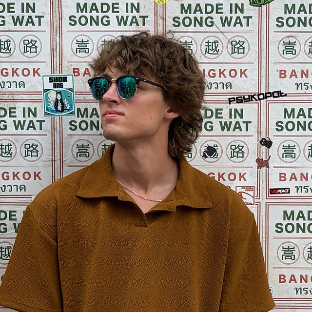

Backend & Full-Stack Developer
Corey Warden
I am a Computer Science graduate from the University of Arkansas with a minor in Math. I turn complex problems into clean, scalable, and testable solutions. I have shipped tools at Centene and I'm now building software for nonprofits. Check out my work below!
Projects
Selected work
Building now
Pathways Donor Platform
Online giving and donor management for Pathways Project Coalition of the Ozarks, so they own their donor data and keep more of every gift.
- Django
- PostgreSQL
- Stripe
- HTMX
College Basketball Predictor
A model that predicts men's college basketball games.
- Python
- Data modeling
Professional · Centene
Automated Monitoring System
Rewrote an API traffic monitor in Python, took passwords out of the repo, and added hourly alerts. My team, manager, and project director continue to use it.
- Python
- GitLab CI
- Docker
- Selenium
GraphQL API Validation
Compared a new GraphQL API against the legacy REST API across about 100 data points. The gaps I found helped push the team to an updated version of the API.
- GraphQL
- Pytest
- Postman
Academic & prototypes
HiDEC Lab Scheduler
Replaced scheduling over email and Google Calendar for a university electronics lab. I owned the database, billing logic, and authentication. Worked with a sponsor to get it deployed.
- FastAPI
- MySQL
- React
- Docker
Sharing Shed Intake Triage
Replaces paper intake at a nonprofit that provides household goods, so referrals stop getting lost. AI sorts each request by category and urgency.
- FastAPI
- React
- Claude API
- SQLite
Experience
The route so far
-
2022 – May 2026
University of Arkansas
B.S. in Computer Science with a minor in Math. My capstone was the HiDEC Lab Scheduler.
-
May 2024 – Aug 2025
Software Application Developer Intern · Centene
Refactored production code, shipped sprint work, and delivered two signature projects in API validation and automated monitoring.
-
Aug 2026 – Present
Coding Instructor · TheCoderSchool
Teach programming fundamentals in Scratch and Python, and design game-based curriculum for students of all ages.
-
Next stop
Your team?
I'm looking for a backend or full-stack role where the work is meaningful.
About
How I work
I do my best work when I can put my head down and work through a hard problem. The tougher the problem, the more I can learn from and enjoy the process. I like work that's technical and practical: systems that real people value.
Centene taught me to learn first, then own it. I'd get up to speed on an unfamiliar system, then take full ownership and run with it on my own. I've worked that way ever since, from my capstone's entire database to a donor platform for a nonprofit.

Off the clock
Where I've been
I enjoy traveling in my free time, and it trains the same skills I use in my work: landing somewhere unfamiliar and getting comfortable fast. Hover over a pin (or tap a place below) to see my experiences around the world.